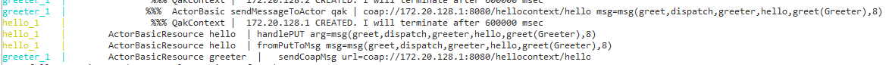

- Create separate projects for the different contexts. In each project's root folder create a Dockerfile (similar to the one from the previous section):
FROM openjdk:12.0.2
EXPOSE 8080
ADD ./build/distributions/*.tar /
ADD ./*.pl /
ENTRYPOINT ["bash", "/<project-name>-1.0/bin/<project-name>"]
where <project-name> is the name used by Gradle to name the folders in the build/distributions directory.
- Create a docker-compose.yml file. Since the actors need to communicate with each other (note: MQTT not considered at the moment).
we will set up a container network and assign to each container a different IP address:
version: '2.1'
services:
hello:
build: <relative-path-to-Dockerfile-folder>
image: qubeactors/hello
mem_limit: 350m
networks:
qubeactors-network:
ipv4_address: "172.20.128.1"
greeter:
build: <relative-path-to-Dockerfile-folder>
image: qubeactors/greeter
mem_limit: 350m
networks:
qubeactors-network:
ipv4_address: "172.20.128.2"
networks:
qubeactors-network:
name: qubeactors-network
ipam:
config:
- subnet: 172.20.0.0/16
- In each project, create a QActork executable model using the IP addresses specified in the docker-compose.yml file:
System hellodocker
Dispatch greet : greet(Name)
Context hellocontext ip [host="172.20.128.1" port=8080]
QActor hello context hellocontext
{
State s0 initial { }
Transition t0
whenMsg greet -> greet
State greet {
onMsg (greet : greet(Name)) {
println("Hello ${payloadArg(0)}")
}
}
Goto s0
}
System greeterdocker
Dispatch greet : greet(Name)
Context greetercontext ip [host="172.20.128.2" port=8080]
Context hellocontext ip [host="172.20.128.1" port=8080]
ExternalQActor hello context hellocontext
QActor greeter context greetercontext {
State s0 initial {
forward hello -m greet : greet(Greeter)
}
}
- Build deployable artifacts for each project:
gradle -b build_<context>.gradle build
- Build docker-compose.yml by running (in the corresponding directory):
docker-compose build
- Deploy the QActork contexts by running
docker-compose up
the logs of the QActork infrastructure should show that the message has been successfully sent and received:

- Clean up the deployment when done:
docker-compose down